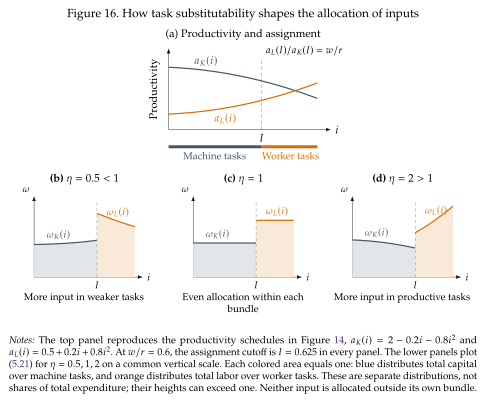

The distribution of inputs across tasks¶
The key to finding the distribution of capital and labor across tasks is to first determine how much of each task the firm produces. This depends on the effective cost of producing each task (\(r/a_K(i)\) for tasks \(i<I\) and \(w/a_L(i)\) for tasks \(i>I\)). Using equality in (5.6) on the machine bundle and in (5.7) on the labor bundle gives
Once we know \(y(i)\) we can use the fact that we know what input is used to produce it to get the capital or labor being used in that task:
The use of each input is proportional to task productivity raised to the power \(\eta-1\). Whether more productive tasks receive more or less input therefore depends on \(\eta\), which determines whether tasks are easy or hard to substitute in production. We return to this idea in a couple of paragraphs when we study the distribution of capital and labor across tasks. First, we use these results to calculate the aggregate demand for capital and labor:
Here \(H_K\) and \(H_L\) are indexes that sum productivity weights over the tasks assigned to capital and labor, respectively (hence the indexes depend on \(I\)). We will see shortly that these productivity indexes determine the productivity of capital and labor in aggregate production, \(A_K(I)\) and \(A_L(I)\).
How do productivity and substitutability determine the distribution of inputs across tasks?
Should the firm spread each input evenly across its tasks, concentrate it where productivity is highest, or devote more resources to its weakest tasks? The exponent \(\eta-1\) in (5.21) answers this question. Dividing the optimal input used in a task by its aggregate demand gives
Each input is zero outside its assigned bundle. Since tasks form a continuum, these are shares per unit of task length: integrating \(\omega_K\) over \([0,I]\) or \(\omega_L\) over \([I,1]\) gives one. Figure 16 shows how the distribution of inputs depends on \(\eta\) in the three main cases we have considered so far. In the figure, the weakest assigned tasks lie near \(I\); the most productive machine tasks lie at the left end and the most productive worker tasks at the right end.

Cobb--Douglas tasks: \(\eta=1\)¶
The productivity terms disappear from the allocation formulas:
Capital is spread evenly across machine tasks, and labor evenly across worker tasks. An equal-length interval receives the same quantity of its assigned input regardless of its productivity. More productive tasks produce more services with those inputs, but do not receive more or fewer inputs because of it.
This is the task-level counterpart of the result in Section 2.1, The direction of technical change. There we wrote \((A_KK)^\alpha(A_LL)^{1-\alpha}=(A_K^\alpha A_L^{1-\alpha})K^\alpha L^{1-\alpha}\): a technology that directly augments one factor enters as a common TFP multiplier. Its direction does not change the optimal physical input ratio at fixed factor prices or the factor income shares because in a Cobb-Douglas all technology is general to all factors regardless of where it originates. Here, with \(I\) fixed, the same separation applies to the productivity of individual tasks:
Changing productivity in any assigned task changes the first term, without changing how inputs enter the remaining terms. There is therefore no productivity bias toward one task in the optimal input allocation, just as Section 2's Cobb--Douglas has no factor bias in the optimal input mix. Thus productivity differences give no reason to allocate more of an input to one of its tasks than another. However, a productivity change can still move the cutoff and change who performs a task (as in Figure 15).
Easy-to-substitute tasks: \(\eta>1\)¶
The firm puts more of each input into the tasks where that input is most productive. It can obtain abundant services there and substitute them for services that are more costly to produce. For two machine tasks \(i,j<I\), the allocation formula gives
with the same relationship for labor within its bundle. Because \(\eta-1>0\), the more productive task receives more input, and the tilt toward it is stronger when \(\eta\) is larger. This is the sense in which the firm goes "all in" on its productive tasks: it prioritizes them, while still supplying the other tasks at a finite elasticity.
Hard-to-substitute tasks: \(\eta<1\)¶
Now \(\eta-1<0\), so (5.24) reverses the ranking: less productive tasks receive more input. These are the weak links in production discussed in Section 4.1. Producing much more of a strong task cannot easily compensate for a shortage of another essential service. The Leontief limit makes the logic especially clear: if \(Y=\min\{y_1,y_2\}\) and \(y_1<y_2\), increasing \(y_2\) alone does not raise output. Resources are more useful in the bottleneck task until the two services are balanced. With a positive elasticity below one, extra services still help, but the benefit is limited by the tasks left behind. The firm therefore assigns more of each input to the less productive tasks in its bundle, where more resources are needed to supply those services. In the Leontief limit \(\eta\longrightarrow0\), the allocation weights are proportional to \(1/a_K(i)\) or \(1/a_L(i)\).
A common economic principle: equal returns at the margin
The allocation formulas are an example of a familiar economic principle: put the next unit of a scarce resource where it contributes the most. Hold task assignment and total capital fixed. If moving a little capital from one machine task to another raises final output, the original allocation cannot be optimal. At the optimum, an extra unit of capital must therefore make the same marginal contribution to final output in every task that uses it. The common return is the shadow value of capital: the extra output obtainable from one more unit of capital. The same reasoning applies to labor within its bundle.
There are two parts to capital's contribution at task \(i\): the task services an extra machine produces, \(a_K(i)\), and how much those services add to final output, \(\partial Y/\partial y(i)\). For two active machine tasks \(i,j<I\), equalizing their product gives
The second line substitutes \(y(i)=a_K(i)k(i)\) and its counterpart for \(j\). Dividing both quantities by \(K\) gives exactly the ratio of \(\omega_K(i)\) to \(\omega_K(j)\) in (5.24); the labor ratio follows in the same way. Thus equal marginal returns produce different allocation patterns depending on \(\eta\): equal quantities at one, more input in productive tasks above one, and more input in weak tasks below one.
The shadow values of task services themselves, \(\partial Y/\partial y(i)\), need not be equal: an extra service can matter more at a bottleneck. What is equalized is its contribution after accounting for how much of the scarce input is needed to produce it. When the firm can also shift spending between capital and labor, the comparison is per dollar:
This is the same logic as the firm's condition \(F_K/r=F_L/w\) behind (1.23), or a consumer's equality of marginal utility per dollar across purchased goods. In each case, unequal marginal gains per unit of the available resource leave a profitable reallocation unexploited.
Aggregate productivity¶
We can now substitute the optimal allocations in (5.21) into the definitions of \(A_K(I)\) and \(A_L(I)\) in (5.16). For \(\eta\neq1\), capital-augmenting productivity becomes
The same substitution over labor's task bundle gives
Thus the same indexes \(H_K(I)\) and \(H_L(I)\) that determine input demand also determine the factor-augmenting productivities in aggregate production. They summarize task productivities after the firm has optimally distributed each input across its assigned bundle. At fixed assignment, higher task productivity raises the corresponding \(A_K\) or \(A_L\). When \(\eta<1\), it lowers the corresponding \(H_K\) or \(H_L\), but the negative exponent \(1/(\eta-1)\) reverses this effect when we calculate \(A_K\) or \(A_L\). Changing the cutoff changes these indexes and therefore changes aggregate productivity. For example, multiplying every \(a_K(i)\) in the capital bundle by the same positive constant multiplies \(A_K(I)\) by that constant, holding \(I\) fixed. This is precisely the meaning of capital-augmenting technological change in Section 3.1.